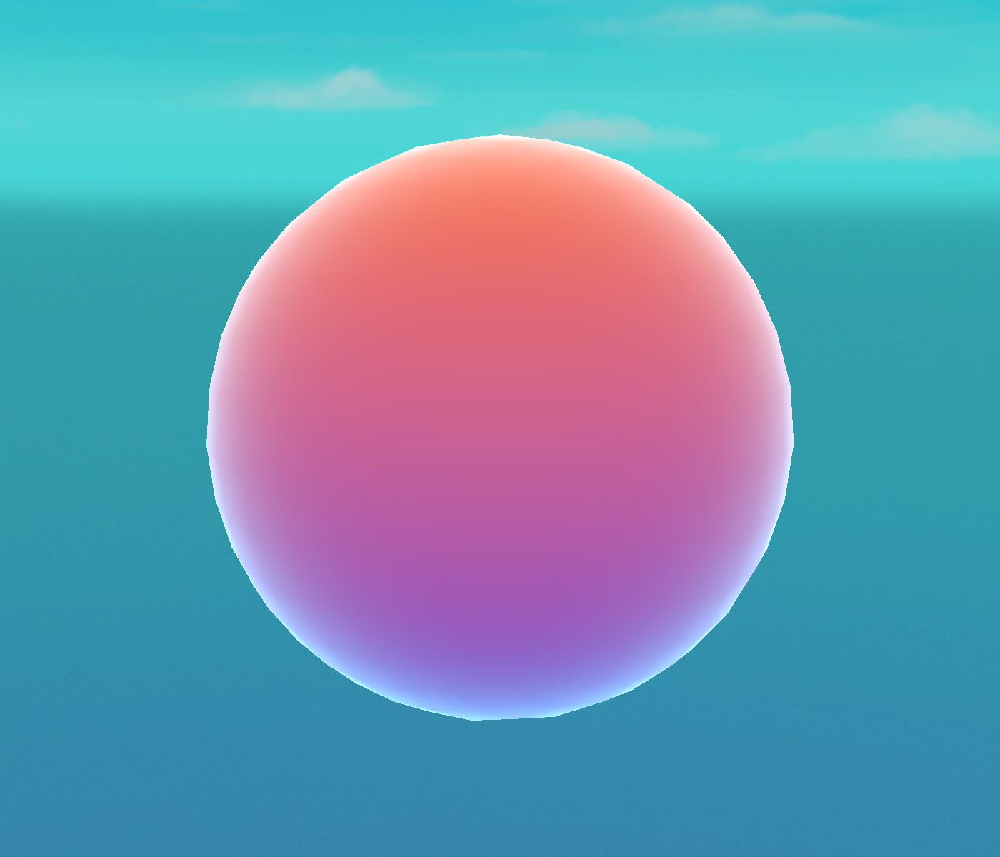

✍️ Lesson 5.2: Writing Shaders in HLSL
Shader Graph is a wonderful on-ramp, but every node is ultimately generating HLSL — the language the GPU actually runs. Writing it by hand gives you effects the graph can't express, tighter control, and the ability to read anyone's shader. In this lesson you'll build a complete URP shader from an empty file: ShaderLab wrapper, vertex and fragment stages, the URP library — ending in a genuine render of the result.
🎯 Learning Objectives
By the end of this lesson, you will be able to:
- Explain the ShaderLab wrapper —
Shader,Properties,SubShader,Pass, and tags - Write an
HLSLPROGRAMblock with the right pragmas and URP includes - Define Attributes and Varyings structs with the correct semantics
- Transform vertices to clip space and compute colour in the fragment stage
- Use URP helpers (
GetVertexPositionInputs,TransformObjectToWorldNormal) and a fresnel rim - Expose properties so the material is tweakable in the Inspector
Estimated Time: 75 minutes · Prerequisite: Lesson 5.1 (the URP frame); Intermediate Shader Graph
In This Lesson
Why Hand-Write HLSL?
Shader Graph covers a huge amount of ground, and you should keep using it. But hand-written HLSL earns its place when you need to: express logic that's awkward as nodes (custom loops, bespoke lighting maths), squeeze performance, integrate a shader from a paper or another engine, or simply read the shaders the rest of the world writes — almost all of which are text. Think of it not as replacing Shader Graph but as removing its ceiling.
A Unity shader is written in HLSL (High-Level Shading Language), wrapped in a thin Unity-specific layer called ShaderLab that declares properties and passes. You'll recognise the structure from the Frame Debugger in Lesson 5.1 — a shader is exactly what runs when a draw call executes inside a pass.
The ShaderLab Wrapper
Every .shader file has the same skeleton. The outer ShaderLab declares the menu name, editable Properties, and one or more SubShader → Pass blocks; the actual GPU code lives inside HLSLPROGRAM … ENDHLSL:
Shader "Custom/RimGradient"
{
Properties // ← what shows up in the material Inspector
{
_TopColor ("Top Color", Color) = (1, 0.45, 0.1, 1)
_BottomColor ("Bottom Color", Color) = (0.1, 0.25, 0.85, 1)
_RimColor ("Rim Color", Color) = (0.6, 0.95, 1, 1)
_RimPower ("Rim Power", Range(0.5, 8)) = 3
}
SubShader
{
// This tag tells Unity the shader targets URP.
Tags { "RenderType"="Opaque" "RenderPipeline"="UniversalPipeline" }
Pass
{
HLSLPROGRAM
// ... the HLSL goes here ...
ENDHLSL
}
}
}The "RenderPipeline"="UniversalPipeline" tag is essential — it's how URP knows this shader is one of its own (and, incidentally, how it becomes SRP-Batcher compatible). Each Property becomes an Inspector field and a variable your HLSL can read.
Vertex → Fragment
Inside the pass, two functions run on the GPU for every object drawn. The vertex function runs once per vertex — its main job is to place the vertex in clip space. The fragment function runs once per covered pixel — it returns the final colour. Data flows from one to the other through a struct the GPU interpolates across the triangle:
(Attributes)"] --> V["vert()
per vertex → clip space"] V --> I["interpolated
Varyings
(across the triangle)"] I --> F["frag()
per pixel → colour"] F --> O["pixel on screen"]
Figure 1: The programmable pipeline. You write vert and frag; the GPU runs them massively in parallel and interpolates the Varyings between them.
The two #pragma lines name those functions, and an #include pulls in URP's shader library so you don't reinvent the transform maths:
#pragma vertex vert
#pragma fragment frag
#include "Packages/com.unity.render-pipelines.universal/ShaderLibrary/Core.hlsl"Attributes & Varyings
Two structs define the data flow. Attributes is what comes in from the mesh (position, normal, UVs…); Varyings is what the vertex stage passes out to the fragment stage. Each field carries a semantic — an uppercase tag telling the GPU what the data means:
struct Attributes // per-vertex mesh input
{
float4 positionOS : POSITION; // object-space position
float3 normalOS : NORMAL; // object-space normal
};
struct Varyings // vertex → fragment (interpolated)
{
float4 positionHCS : SV_POSITION; // REQUIRED: clip-space position
float3 normalWS : TEXCOORD0; // we pass the world normal along
float3 positionWS : TEXCOORD1; // and the world position
float heightOS : TEXCOORD2; // object-space height for the gradient
};The suffixes (OS, WS, HCS) are a URP naming convention for the space a value is in — Object, World, Homogeneous Clip Space. Keeping spaces straight in the names is how you avoid the classic "why is my lighting wrong" bug. SV_POSITION on the Varyings is mandatory — it's the clip-space position the rasteriser needs.
The Vertex Stage
The vertex function converts the incoming object-space position into clip space (so the GPU knows where to draw it) and prepares the world-space data the fragment stage will need. URP's GetVertexPositionInputs does all the space transforms in one call:
Varyings vert (Attributes IN)
{
Varyings OUT;
// One helper computes clip/world/view/etc positions for us.
VertexPositionInputs p = GetVertexPositionInputs(IN.positionOS.xyz);
OUT.positionHCS = p.positionCS; // clip space (required)
OUT.positionWS = p.positionWS; // world space
OUT.normalWS = TransformObjectToWorldNormal(IN.normalOS); // normal → world
OUT.heightOS = IN.positionOS.y + 0.5; // sphere y: -0.5..0.5 → 0..1
return OUT;
}You could do the matrix multiply by hand (TransformObjectToHClip(IN.positionOS.xyz) is the direct route), but the GetVertexPositionInputs helper hands you clip and world position together, which we both need. TransformObjectToWorldNormal correctly transforms the normal (which doesn't transform the same way a position does).
The Fragment Stage
The fragment function returns the pixel colour. Ours does two things: a vertical colour gradient from the object-space height, and a fresnel rim — a glow that intensifies where the surface faces away from the camera (a staple effect that reads as a soft edge light):
float4 _TopColor; float4 _BottomColor; float4 _RimColor; float _RimPower;
half4 frag (Varyings IN) : SV_Target
{
float3 N = normalize(IN.normalWS);
float3 V = normalize(GetWorldSpaceViewDir(IN.positionWS)); // to the camera
// Fresnel: bright where the surface faces away from the viewer (grazing angle).
float rim = pow(1.0 - saturate(dot(N, V)), _RimPower);
// Vertical gradient by object height, plus the rim glow on top.
float3 baseCol = lerp(_BottomColor.rgb, _TopColor.rgb, saturate(IN.heightOS));
float3 col = baseCol + _RimColor.rgb * rim;
return half4(col, 1.0);
}The fresnel trick is worth internalising: dot(N, V) is near 1 when you look straight at a surface and near 0 at grazing angles, so 1 - dot(N,V) is a mask that's bright around the silhouette. Raising it to _RimPower tightens the rim. You'll reuse this in countless effects — force fields, holograms, highlight outlines.
The Full Shader & Result
Assembled and applied to a sphere, here's the shader running in Unity 6 — a real capture, not a mock-up:

Custom/RimGradient shader rendered on a sphere in Unity 6. The vertical orange-to-blue gradient comes from the fragment stage's height lerp; the cyan glow around the edge is the fresnel rim — both hand-written HLSL, no Shader Graph.Shader "Custom/RimGradient"
{
Properties
{
_TopColor ("Top Color", Color) = (1, 0.45, 0.1, 1)
_BottomColor ("Bottom Color", Color) = (0.1, 0.25, 0.85, 1)
_RimColor ("Rim Color", Color) = (0.6, 0.95, 1, 1)
_RimPower ("Rim Power", Range(0.5, 8)) = 3
}
SubShader
{
Tags { "RenderType"="Opaque" "RenderPipeline"="UniversalPipeline" }
Pass
{
HLSLPROGRAM
#pragma vertex vert
#pragma fragment frag
#include "Packages/com.unity.render-pipelines.universal/ShaderLibrary/Core.hlsl"
struct Attributes { float4 positionOS : POSITION; float3 normalOS : NORMAL; };
struct Varyings
{
float4 positionHCS : SV_POSITION;
float3 normalWS : TEXCOORD0;
float3 positionWS : TEXCOORD1;
float heightOS : TEXCOORD2;
};
float4 _TopColor; float4 _BottomColor; float4 _RimColor; float _RimPower;
Varyings vert (Attributes IN)
{
Varyings OUT;
VertexPositionInputs p = GetVertexPositionInputs(IN.positionOS.xyz);
OUT.positionHCS = p.positionCS;
OUT.positionWS = p.positionWS;
OUT.normalWS = TransformObjectToWorldNormal(IN.normalOS);
OUT.heightOS = IN.positionOS.y + 0.5;
return OUT;
}
half4 frag (Varyings IN) : SV_Target
{
float3 N = normalize(IN.normalWS);
float3 V = normalize(GetWorldSpaceViewDir(IN.positionWS));
float rim = pow(1.0 - saturate(dot(N, V)), _RimPower);
float3 baseCol = lerp(_BottomColor.rgb, _TopColor.rgb, saturate(IN.heightOS));
float3 col = baseCol + _RimColor.rgb * rim;
return half4(col, 1.0);
}
ENDHLSL
}
}
}Create this as a .shader asset (right-click ▸ Create ▸ Shader ▸ Unlit Shader and replace the contents), make a Material from it, and the four Properties appear in the Inspector — drag _RimPower up and the glow tightens live.
⚠️ This is an unlit shader
Our shader computes its own colour and ignores scene lights — great for stylised or effect materials. To react to URP lighting you'd include Lighting.hlsl, fill a SurfaceData/InputData, and call UniversalFragmentPBR — more machinery than we need here. Start unlit; add lighting when the effect calls for it.
Hands-on Challenge
🏋️ Exercise 1: Make it yours
Objective: Modify a working shader to build intuition.
- Create the
RimGradientshader and material; apply it to a sphere and a capsule. - Change
_RimPowerfrom 3 to 1, then to 6 — watch the rim widen then tighten. Why? - Add a
_RimColormultiplier so the rim pulses over time: add#includefor time and multiplyrimby(0.5 + 0.5*sin(_Time.y*3)). (_Timeis a built-in URP variable.) - Swap the gradient axis: use
IN.positionWS.yinstead of object height so the gradient is fixed in world space as the object rotates.
💡 Why does higher _RimPower tighten the rim?
pow(x, p) for x in 0–1 pushes values toward 0 as p grows — so only the very edge (where 1-dot(N,V) is close to 1) stays bright, and the interior falls off faster. Lower power = broad soft glow; higher power = thin crisp rim.
🏋️ Exercise 2: Read a semantic
Explain, in one line each, what these do: float4 positionOS : POSITION, float4 positionHCS : SV_POSITION, half4 frag(...) : SV_Target.
✅ Answers
POSITION — the incoming object-space vertex position from the mesh. SV_POSITION — the required clip-space output the rasteriser uses to place the vertex (a "system value"). SV_Target — the fragment's output colour, written to the render target.
🎯 Quick Quiz
Question 1: What does the vertex function's primary job return?
Question 2: The Varyings struct carries data from the vertex stage to the fragment stage. What happens to those values across a triangle?
Question 3: A fresnel term uses 1 - saturate(dot(N, V)). Where is it brightest?
Summary
🎉 Key Takeaways
- A Unity shader is HLSL wrapped in ShaderLab (
Shader/Properties/SubShader/Pass); the URP tag makes it URP-and-SRP-Batcher aware. - Inside
HLSLPROGRAM:#pragma vertex/fragmentname the stages, and you#includeURP'sCore.hlsl. - Attributes is mesh input, Varyings is vertex→fragment (interpolated); semantics (
POSITION,SV_POSITION,SV_Target) tag each field. - The vertex stage outputs clip space (
GetVertexPositionInputs); the fragment stage returns colour. - URP helpers (
TransformObjectToWorldNormal,GetWorldSpaceViewDir) save you the transform maths; a fresnel rim ispow(1 - dot(N,V), power). - Every Property becomes a live Inspector control on the material.
🚀 What's Next?
You can write the code that runs inside a pass. Next you'll add whole passes to the frame. In Lesson 5.3: Scriptable Renderer Features & Custom Passes we inject custom rendering at the RenderPassEvent points from Lesson 5.1, using URP 17's RenderGraph API.
✍️ No more black box
Vertex places it, fragment colours it, semantics wire it together. You can now read and write the shaders that Shader Graph only hinted at — and that's a permanent upgrade.